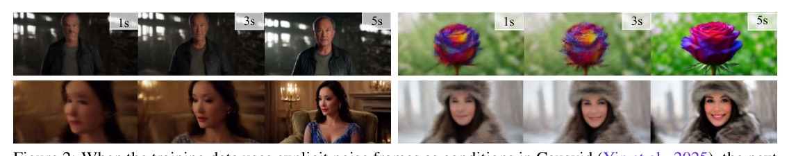
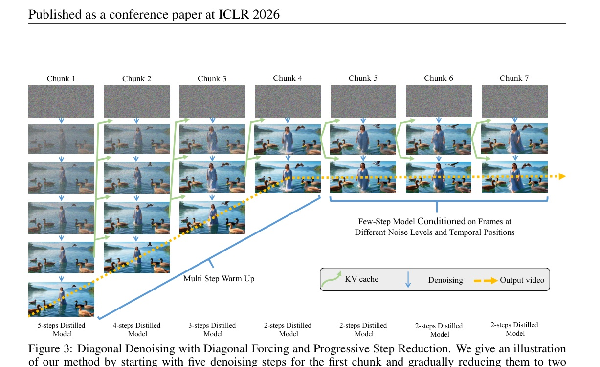
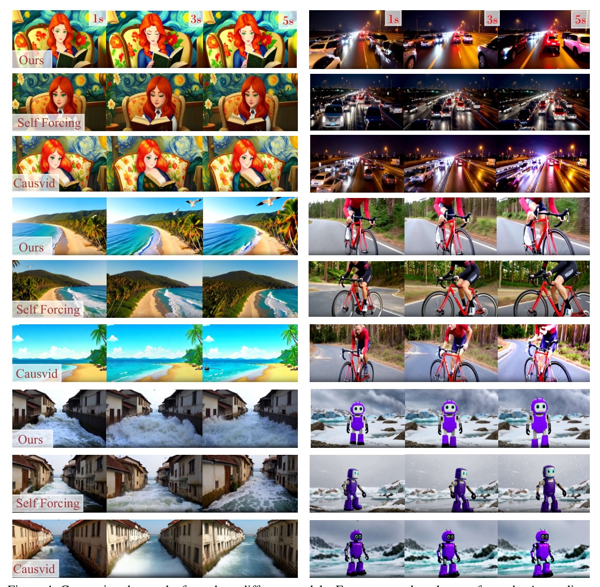
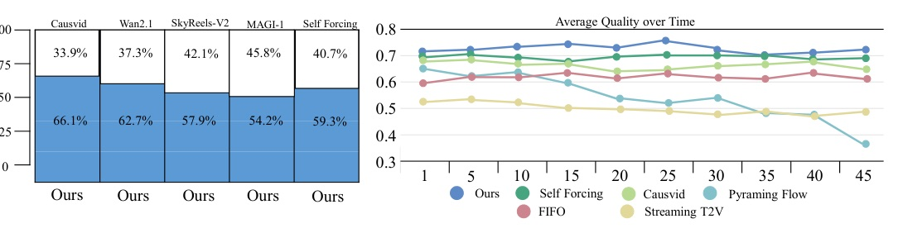

前面的 chunk 多花幾步，後面的 chunk 少花幾步：5 秒影片 2.61 秒生成（最高 31 FPS）。
來源：Abstract / Table 1（p.7）


| Model | Throughput | 首幀延遲 | Speedup | Total | Quality | Semantic |
|---|---|---|---|---|---|---|
| Wan2.1 | 0.78 | 103 | 1.0× | 84.26 | 85.30 | 80.09 |
| SkyReels-V2 | 0.49 | 112 | 0.91× | 82.67 | 84.70 | 74.53 |
| MAGI-1 | 0.19 | 282 | 0.36× | 79.18 | 82.04 | 67.74 |
| CausVid | 17.0 | 0.69 | 149.3× | 81.20 | 84.05 | 69.80 |
| Self-Forcing | 17.0 | 0.69 | 149.3× | 84.31 | 85.07 | 81.28 |
| DiagDistill (Ours) | 31.0 | 0.37 | 277.3× | 84.48 | 85.26 | 81.73 |

| Variant | Temporal | Frame | Text Align. | Total |
|---|---|---|---|---|
| Without Diagonal Forcing | 92.1 | 60.1 | 26.9 | 83.58 |
| Without Flow Loss | 92.5 | 60.8 | 27.8 | 84.18 |
| Without Diagonal Denoising | 95.1 | 63.2 | 28.6 | 84.46 |
| Full Method (Ours) | 94.9 | 63.4 | 28.9 | 84.48 |
| Steps | Temporal | Frame | Text | NFEs | Latency (s) | FPS |
|---|---|---|---|---|---|---|
| 4322222（採用） | 94.9 | 63.4 | 28.9 | 34 | 0.23 | 31.0 |
| 5433333 | 95.1 | 63.2 | 29.3 | 48 | 0.34 | 23.3 |
| 5432222 | 94.8 | 63.1 | 29.0 | 40 | 0.23 | 29.7 |
| 5333333 | 95.0 | 63.9 | 29.1 | 46 | 0.34 | 22.5 |
| 4333333 | 95.0 | 63.7 | 28.5 | 44 | 0.34 | 23.5 |
| 4222222 | 93.4 | 62.3 | 27.8 | 32 | 0.23 | 32.0 |

把計算花在最關鍵的早期 chunk，讓串流影片生成更快也更穩